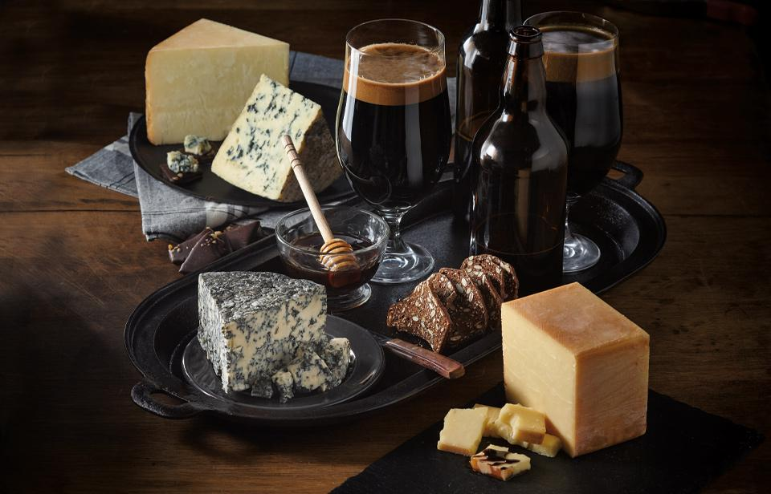
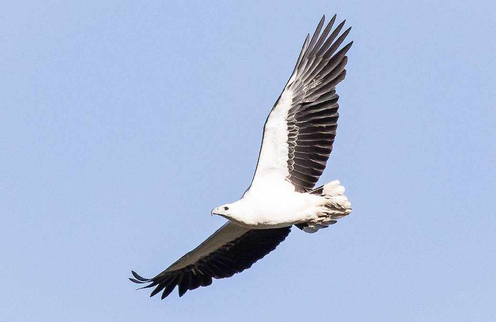
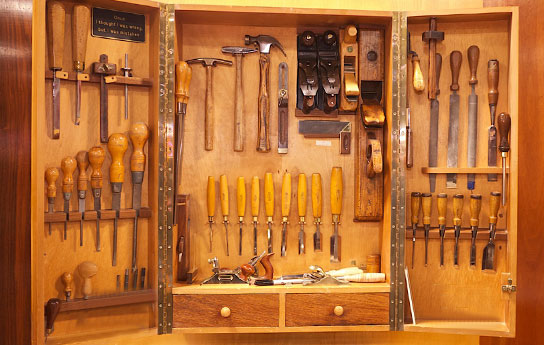

When I'm not programming

Playing piano is one of the things that make me happy in life. I love sitting down on a lazy sunday afternoon and play along with something on the radio or improvise and cherry pick some nice melodies.

Enjoying good food, beautiful beers and surprising combinations. Cooking is an important part of my weekly routine. Going out for food as well! Does it get any better then sharing the joy of being served a cold special beer on a friday night?

Above: the white bellied sea eagle of which
we saw one in Indonesia.
we saw one in Indonesia.
Birdwatching is something that just happened to me and makes me helpless the moment I step out of the door. Always aware for something special or common in the corner of my eye. Birdwatching is the closest thing I know to becomming zen.
Good to know: don't start the subject unless you really really want to!

A few years ago I decided to become an artisan furniture maker (ambachtelijk meubelmaker). I've made an assortment of furniture for myself and still love the feel and smell of wood and tools.